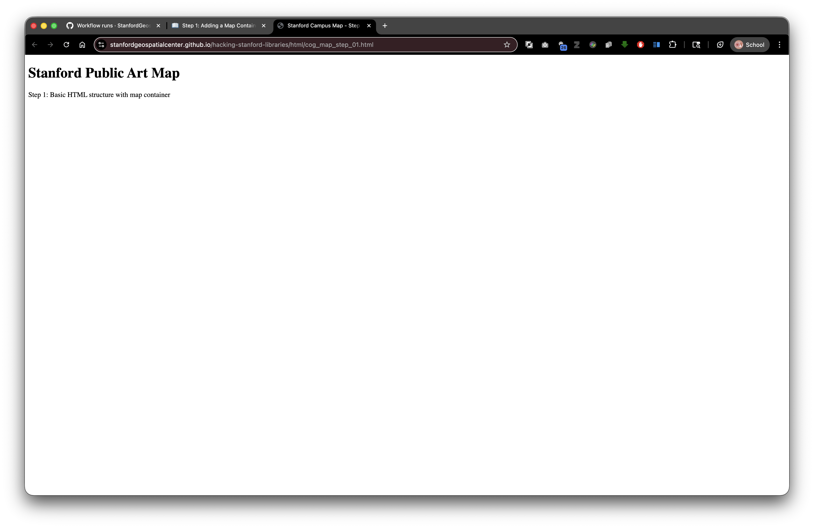

Step 1: Adding a Map Container
Live Demo: html/cog_map_step_01.html

Overview
In this step, we'll add visible content to our HTML page and create a container where our interactive map will live.
Learning Objectives
- Add a title and description to the page
- Create a
<div>element to hold our map - Understand inline CSS styling
- Learn about HTML headings and paragraphs
What We're Building
We'll add:
- A page title (heading)
- A brief description
- An empty container for our map (we'll make it interactive in the next step)
The Complete Code
<!DOCTYPE html>
<html lang="en">
<head>
<base target="_top">
<meta charset="utf-8">
<meta name="viewport" content="width=device-width, initial-scale=1">
<title>Stanford Campus Map - Step 1: Basic HTML</title>
</head>
<body>
<h1>Stanford Public Art Map</h1>
<p>Step 1: Basic HTML structure with map container</p>
<div id="map" style="width: 600px; height: 400px;"></div>
</body>
</html>
What's New?
Let's examine each new element:
1. Page Title
<title>Stanford Campus Map - Step 1: Basic HTML</title>
What it does: Sets the text that appears in the browser tab
Where it goes: Inside the <head> section (not visible on the page itself)
Why it matters:
- Helps users identify your tab when they have multiple tabs open
- Used by search engines as the main title in search results
- Appears when users bookmark your page
Best practices:
- Keep it concise (50-60 characters)
- Make it descriptive
- Put the most important keywords first
2. Heading Element
<h1>Stanford Public Art Map</h1>
What it does: Creates a large, bold heading on the page
HTML Heading Levels: There are six levels of headings:
<h1>- Most important (largest)<h2>- Second level<h3>- Third level<h4>- Fourth level<h5>- Fifth level<h6>- Least important (smallest)
Best practices:
- Use only ONE
<h1>per page (it's the main title) - Use headings in order (don't skip from
<h1>to<h3>) - Think of headings as an outline for your page
3. Paragraph Element
<p>Step 1: Basic HTML structure with map container</p>
What it does: Creates a paragraph of text
Characteristics:
- Automatically adds spacing before and after
- Text wraps to fit the width of the browser window
- Multiple
<p>tags create separate paragraphs
4. The Map Container (Div Element)
<div id="map" style="width: 600px; height: 400px;"></div>
This is the most important part! Let's break it down piece by piece:
The <div> Tag
What it is: A generic container element (think of it as an empty box)
What it does: Groups content together or creates a space for content
"div" stands for: "division" - it divides your page into sections
Why we use it: We need a specific place on the page where the map will appear. The <div> creates that space.
The id Attribute
id="map"
What it does: Gives this specific <div> a unique identifier
Think of it as: A name tag - this is how we'll tell our JavaScript "put the map HERE"
Rules for IDs:
- Must be unique (only one element can have
id="map") - Can't have spaces (use hyphens:
id="my-map") - Case-sensitive (
id="Map"is different fromid="map")
Why we need it: In Step 2, our JavaScript code will look for an element with id="map" and put an interactive map inside it.
Inline CSS Styling
style="width: 600px; height: 400px;"
What it does: Defines the appearance of this element using CSS
Breaking it down:
style=- Indicates we're adding CSS styleswidth: 600px;- Make this div 600 pixels wideheight: 400px;- Make this div 400 pixels tall
Understanding Pixels (px):
- A pixel is a tiny dot on your screen
- 600px = 600 dots wide
- Most computer monitors are 1920px wide or more
- Most phones are 375-428px wide
Why we need size: Without a specific width and height, the div would be invisible (0 pixels tall). The map needs space to display!
The semicolon: Separates different CSS rules. Format is property: value;
Visualizing the Structure
Here's how the browser interprets this code:
┌─────────────────────────────────────┐
│ Browser Window │
├─────────────────────────────────────┤
│ │
│ Stanford Public Art Map <- <h1> │
│ │
│ Step 1: Basic HTML... <- <p> │
│ │
│ ┌─────────────────────┐ │
│ │ │ │
│ │ [Empty div] │ <- <div> │
│ │ 600px × 400px │ │
│ │ │ │
│ └─────────────────────┘ │
│ │
└─────────────────────────────────────┘
Relative Paths Reminder
Currently, all our content is in the HTML file itself. But soon we'll reference external files:
Local files (in your project folder):
<img src="collection/campus-photo.jpg">
Digital Stacks files (from SDR):
<img src="https://stacks.stanford.edu/file/druid:abc123def456/campus-photo.jpg">
When you deposit to SDR: Your HTML file and the collection folder maintain their relationship, so relative paths keep working!
Try It Yourself
- Create a new file called
step-01.html - Copy the complete code from above
- Save the file
- Open it in your browser
You should see:
- A large heading that says "Stanford Public Art Map"
- A smaller line of text below it
- A blank area where the map will go (you might need to look carefully - it's there but has no border)
Experiment!
Try changing these values and reloading the page:
Change the heading:
<h1>My Custom Map Title</h1>
Change the size of the map container:
<div id="map" style="width: 800px; height: 600px;"></div>
Add a border to see the map container more clearly:
<div id="map" style="width: 600px; height: 400px; border: 2px solid black;"></div>
Connection to Digital Stacks
When you deposit this HTML file to the Stanford Digital Repository (SDR), you might have a structure like:
Your SDR Object (druid:abc123xyz456)
├── index.html (this file)
├── collection/
│ └── data.geojson
└── images/
└── logo.png
Your HTML can reference these files with relative paths:
<img src="images/logo.png">
Related resources:
- Stanford Digital Repository: https://sdr.stanford.edu/
- Stanford Libraries APIs: https://api.library.stanford.edu/
- Stanford Geospatial Center: https://gis.stanford.edu/
And users access your page at:
https://stacks.stanford.edu/file/druid:abc123xyz456/index.html
All the relative references will work correctly!
What's Next?
In Step 2: Initialize Leaflet Map, we'll transform that empty <div> into a fully interactive web map!
Key Takeaways
- The
<title>tag sets the browser tab text <h1>creates the main heading for your page<p>creates paragraphs of text<div>creates container elements- The
idattribute gives elements unique identifiers - Inline styles (CSS) control appearance with
width,height, etc. - Elements need dimensions to be visible
Common Questions
Q: Why is the div empty?
A: We're creating the space now. In the next step, JavaScript will fill it with a map.
Q: Can I use different dimensions?
A: Yes! Try different values to see what works best for your needs.
Q: What if I don't see anything?
A: The div is there but might be invisible. Try adding a border to make it visible (see "Experiment" section above).
Previous: Step 0: Basic HTML Structure | Next: Step 2: Initialize Leaflet Map